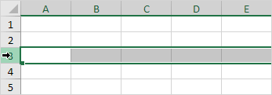
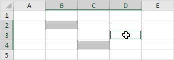
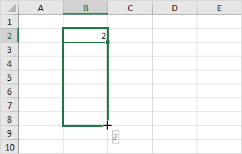
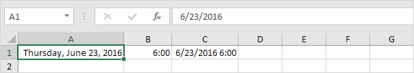

Memulai dengan Microsoft Excel
Cepat dan mudah memulai dengan kompilasi Microsoft Excel, file dasar dan tautan bermanfaat. Unduh semua contoh kami untuk memulai.

Panduan
Baca instruksi dan dokumentasi yang lebih mendetail tentang penggunaan Microsoft Excel.
Range
Sel, Baris, Kolom | Contoh Range | Isi Range | Pindahkan Range | Salin/Tempel Range | Sisipkan Baris, Kolom
Sebuah Range di Excel adalah kumpulan dua atau lebih sel. Bab ini memberikan gambaran umum tentang beberapa operasi jangkauan yang sangat penting.
Sel, Baris, Kolom
Mari kita mulai dengan memilih sel, baris, dan kolom.
-
Untuk memilih sel C3, klik kotak di persimpangan kolom C dan baris 3.

-
Untuk memilih kolom C, klik pada header kolom C.

-
Untuk memilih baris 3, klik header baris 3.

Contoh Range
Range adalah kumpulan dari dua atau lebih sel.
-
Untuk memilih Range B2:C4, klik sel B2 dan seret ke sel C4.

-
Untuk memilih Range sel individual, tahan Ctrl dan klik pada setiap sel yang ingin Anda sertakan dalam Range.

Isi Range
Untuk mengisi Range, jalankan langkah-langkah berikut.
-
Masukkan nilai 2 ke dalam sel B2.

-
Pilih sel B2, klik di sudut kanan bawah sel B2 dan seret ke bawah ke sel B8.

Hasil:

Teknik menyeret ini sangat penting dan Anda akan sering menggunakannya di Excel. Berikut contoh lain.
-
Masukkan nilai 2 ke dalam sel B2 dan nilai 4 ke dalam sel B3.

-
Pilih sel B2 dan sel B3, klik di sudut kanan bawah Range ini dan seret ke bawah.

Excel secara otomatis mengisi Range berdasarkan pola dua nilai pertama. Itu cukup keren ya!? Berikut contoh lain.
-
Masukkan tanggal 13/6/2016 ke dalam sel B2 dan tanggal 16/6/2016 ke dalam sel B3.

Selengkapnya Fungsi Tanggal
Tahun, Bulan, Hari | Fungsi Tanggal | Tanggal & Waktu Saat Ini | Jam, Menit, Detik | Fungsi Waktu
Untuk memasukkan tanggal di Excel, gunakan karakter "/" atau "-". Untuk memasukkan waktu, gunakan ":" (titik dua). Anda juga dapat memasukkan tanggal dan waktu dalam satu sel.

Catatan: Tanggal dalam Format AS. Bulan pertama, Hari kedua. Jenis format ini tergantung pada pengaturan regional windows Anda. Pelajari lebih lanjut tentang format Tanggal dan Waktu.
Format Tanggal dan Waktu
Tanggal dan waktu di Excel dapat ditampilkan dalam berbagai cara. Untuk menerapkan format Tanggal atau Waktu , jalankan langkah-langkah berikut.
1. Pilih sel A1.

2. Klik kanan, lalu klik Format Sel.
3. Dalam daftar Kategori, pilih Tanggal, lalu pilih format Tanggal.

4. Klik Oke.

Catatan: untuk menerapkan format Waktu, dalam daftar Kategori, pilih Waktu.
5. Tanggal disimpan sebagai angka di Excel dan menghitung jumlah hari sejak 0, Januari 1900. Waktu ditangani secara internal sebagai angka antara 0 dan 1. Untuk melihat ini dengan jelas, ubah format angka sel A1, B1 dan C1 ke Umum .

Catatan: ternyata, 42544 hari setelah 0, 1900 sama dengan 23 Juni 2016. 6:00 direpresentasikan sebagai 0,25 (seperempat sepanjang hari).
6. Anda dapat memasukkan waktu sebagai 6:00, tetapi Excel menampilkan waktu ini sebagai 6:00:00 di bilah rumus. AM digunakan untuk waktu malam dan pagi hari. PM digunakan untuk waktu pada sore dan malam hari.

7. Ubah format angka sel C1 menjadi Date only.

Catatan: sel C1 masih berisi angka 42544.25. Kami hanya mengubah tampilan nomor, bukan nomor itu sendiri.
Tahun Bulan Hari
Untuk mendapatkan tahun dari suatu tanggal, gunakan fungsi YEAR.

Catatan: gunakan fungsi MONTH dan DAY untuk mendapatkan bulan dan hari dari suatu tanggal.
Fungsi Tanggal
-
Untuk menambahkan jumlah hari ke tanggal, gunakan rumus sederhana berikut.

-
Untuk menambahkan jumlah tahun, bulan dan/atau hari, gunakan fungsi TANGGAL.

Catatan: fungsi DATE menerima tiga argumen: tahun, bulan dan hari. Excel tahu bahwa 6 + 2 = 8 = Agustus memiliki 31 hari dan bergulir ke bulan berikutnya (23 Agustus + 9 hari = 1 September).
Tanggal & Waktu Saat Ini
Untuk mendapatkan tanggal dan waktu saat ini, gunakan fungsi SEKARANG.

Catatan: gunakan fungsi TODAY untuk memasukkan tanggal hari ini di Excel.
Jam, Menit, Detik
Untuk mengembalikan jam, gunakan fungsi HOUR.

Catatan: gunakan fungsi MINUTE dan SECOND untuk mengembalikan menit dan detik.
Fungsi Waktu
Untuk menambahkan jumlah jam, menit dan/atau detik, gunakan fungsi TIME.

Catatan: Excel menambahkan 2 jam, 10 + 1 = 11 menit dan 70 - 60 = 10 detik.
-
-
Pilih sel B2 dan sel B3, klik di sudut kanan bawah Range ini dan seret ke bawah.
Pindahkan Range
Untuk memindahkan Range, jalankan langkah-langkah berikut.
-
Pilih Range dan klik batas Range.

-
Seret Range ke lokasi barunya.

Salin/Tempel Range
Untuk menyalin dan menempelkan Range, jalankan langkah-langkah berikut.
-
Pilih Range, klik kanan, lalu klik Salin (atau tekan CTRL + c).

-
Pilih sel di mana Anda ingin sel pertama dari Range muncul, klik kanan, lalu klik Tempel di bawah 'Opsi Tempel:' (atau tekan CTRL + v).
Sisipkan Baris, Kolom
Untuk menyisipkan baris antara nilai 20 dan 40 di bawah, jalankan langkah-langkah berikut.
-
Pilih baris 3.

-
Klik kanan, lalu klik Sisipkan.

Hasil.

Baris di bawah baris baru digeser ke bawah. Dengan cara yang sama, Anda dapat menyisipkan kolom.
Rumus dan Fungsi
Masukkan Rumus | Mengedit Rumus | Prioritas Operator | Salin/Tempel Rumus | Sisipkan Rumus
Sebuah rumus adalah ekspresi yang menghitung nilai sel. Fungsi adalah rumus yang telah ditentukan sebelumnya dan sudah tersedia di Excel.
Misalnya, sel A3 di bawah ini berisi rumus yang menambahkan nilai sel A2 ke nilai sel A1.

Misalnya, sel A3 di bawah ini berisi fungsi SUM yang menghitung jumlah Range A1:A2.

Masukkan Rumus
Untuk memasukkan rumus, jalankan langkah-langkah berikut.
- Pilih sel.
- Untuk memberi tahu Excel bahwa Anda ingin memasukkan rumus, ketikkan tanda sama dengan (=).
-
Misalnya, ketikkan rumus A1+A2.
Tips: daripada mengetik A1 dan A2, cukup pilih sel A1 dan sel A2.
-
Ubah nilai sel A1 menjadi 3.

Excel secara otomatis menghitung ulang nilai sel A3. Ini adalah salah satu fitur Excel yang paling kuat!
Mengedit Rumus
Saat Anda memilih sel, Excel memperlihatkan nilai atau rumus sel di bilah rumus.

-
Untuk mengedit rumus, klik di bilah rumus dan ubah rumus.

-
Tekan Enter.

Prioritas Operator
Excel menggunakan urutan default di mana perhitungan terjadi. Jika bagian dari rumus ada dalam tanda kurung, bagian itu akan dihitung terlebih dahulu. Kemudian melakukan perhitungan perkalian atau pembagian. Setelah ini selesai, Excel akan menambah dan mengurangi sisa rumus Anda. Lihat contoh di bawah ini.

Pertama, Excel melakukan perkalian (A1 * A2). Selanjutnya, Excel menambahkan nilai sel A3 ke hasil ini.
Contoh lain,

Pertama, Excel menghitung bagian dalam tanda kurung (A2+A3). Selanjutnya, hasil ini dikalikan dengan nilai sel A1.
Salin/Tempel Rumus
Saat Anda menyalin rumus, Excel secara otomatis menyesuaikan referensi sel untuk setiap sel baru tempat rumus disalin. Untuk memahaminya, lakukan langkah-langkah berikut.
-
Masukkan rumus yang ditunjukkan di bawah ini ke dalam sel A4.

-
Pilih sel A4, klik kanan, lalu klik Salin (atau tekan CTRL + c)...

... selanjutnya, pilih sel B4, klik kanan, lalu klik Tempel di bawah 'Opsi Tempel:' (atau tekan CTRL + v).

-
Anda juga dapat menyeret rumus ke sel B4. Pilih sel A4, klik di sudut kanan bawah sel A4 dan seret ke sel B4. Ini jauh lebih mudah dan memberikan hasil yang sama persis!

Hasil. Rumus di sel B4 mereferensikan nilai di kolom B.

Sisipkan Rumus
Setiap fungsi memiliki struktur yang sama. Misalnya, SUM(A1:A4). Nama fungsi ini adalah SUM. Bagian antara tanda kurung (argumen) berarti kami memberikan Excel Range A1:A4 sebagai input. Fungsi ini menambahkan nilai dalam sel A1, A2, A3 dan A4. Tidak mudah untuk mengingat fungsi dan argumen mana yang digunakan untuk setiap tugas. Untungnya, fitur Insert Function di Excel membantu Anda dalam hal ini.
Untuk menyisipkan fungsi, jalankan langkah-langkah berikut.
- Pilih sel.
-
Klik tombol Insert Function.

Kotak dialog 'Insert Function' muncul.
-
Cari fungsi atau pilih fungsi dari kategori. Misalnya, pilih COUNTIF dari kategori Statistik.

-
Klik Oke.
Kotak dialog 'Function Arguments' muncul. - Klik pada kotak Range dan pilih range A1:C2.
- Klik di kotak Kriteria dan ketik >5.
-
Klik Oke.

Hasil. Fungsi COUNTIF menghitung jumlah sel yang lebih besar dari 5.

Catatan: daripada menggunakan fitur Insert Function, cukup ketik =COUNTIF(A1:C2,">5"). Saat Anda tiba di: =COUNTIF( alih-alih mengetik A1:C2, cukup pilih Range A1:C2.